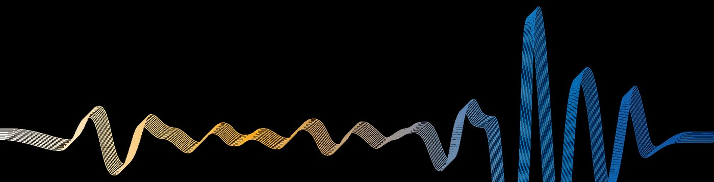
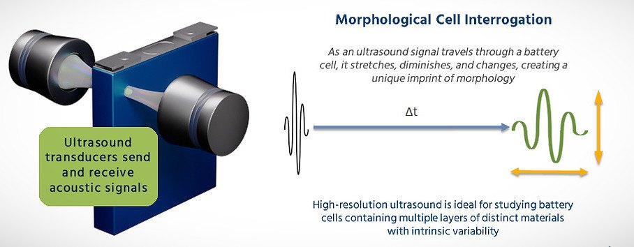
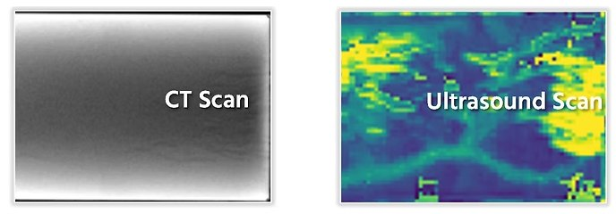
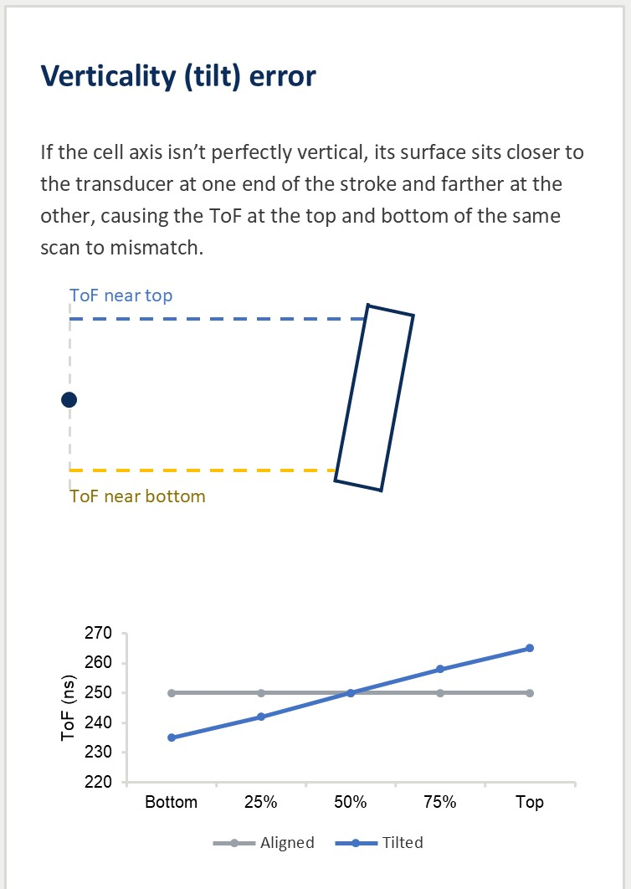
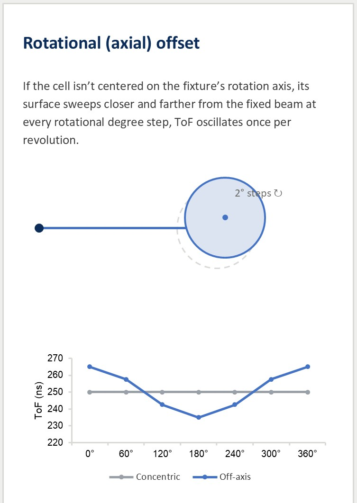
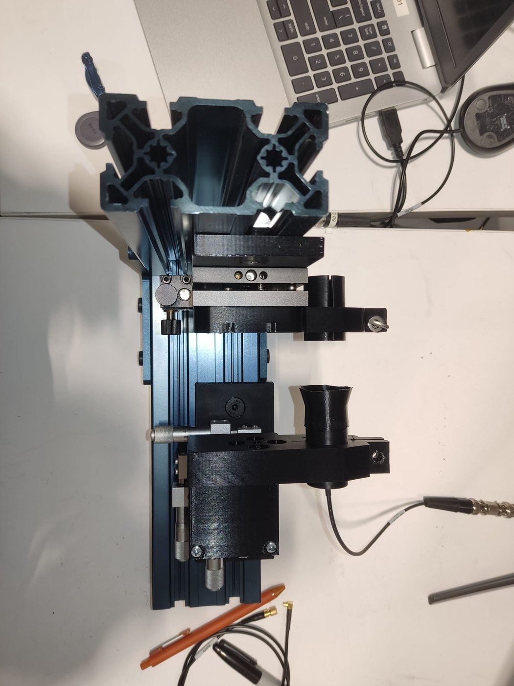
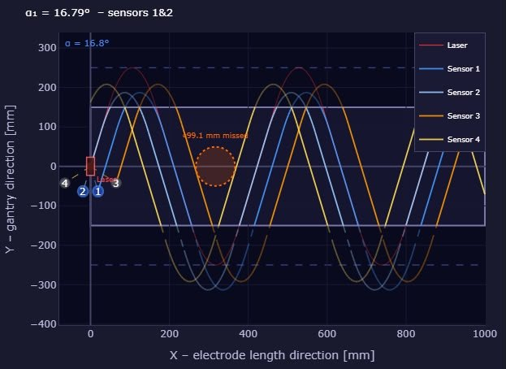
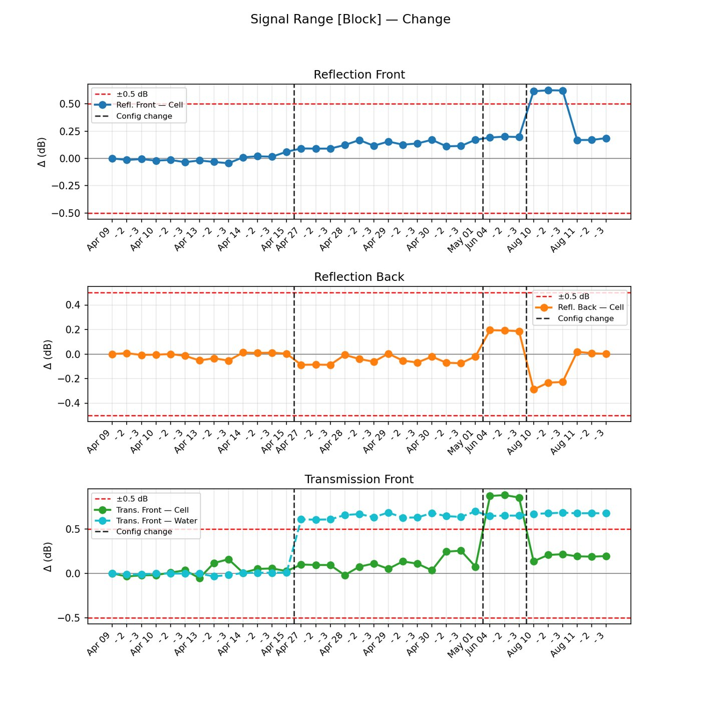

Ultrasound and Battery Science Intern at Titan Advanced Energy Solutions, January to August 2026.

Worked within Titan's battery science team on ultrasound systems used to non-destructively inspect cylindrical and prismatic cells, improving how fast, how accurately, and how consistently defects are detected.


Engineered a standardized protocol for swapping and spatially aligning the cell fixtures that hold cylindrical cells inside the ultrasound tank. The sequence removes operator-to-operator variability and gives a repeatable alignment reference across different cell dimensions.
The two error modes the protocol corrects for are shown below. A cell that is not perfectly vertical makes the Time-of-Flight mismatch between the top and bottom of a scan, and a cell that is not centred on the fixture's rotation axis makes it oscillate once per revolution.


Characterized 70 air-coupled transducers across time-domain and frequency-domain features, then built an interactive visualization tool to compare them and match the optimal transmitter and receiver pairs.

Determined the optimal spatial configuration for an inspection array mounted on a gantry travelling perpendicular to a moving electrode manufacturing line. The tool takes electrode width, line speed, gantry speed and sensor count, solves for the configuration that maximizes surface coverage, and visualizes the combined sensor trajectories alongside quality metrics such as the largest defect that could pass uninspected.

Established repeatable reference baselines across multi-week battery cycling campaigns using a known-density prismatic block, quantifying acoustic drift and restoring transducer alignment after hardware reconfigurations or fixture swaps.
